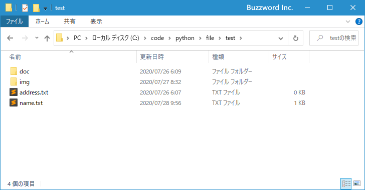
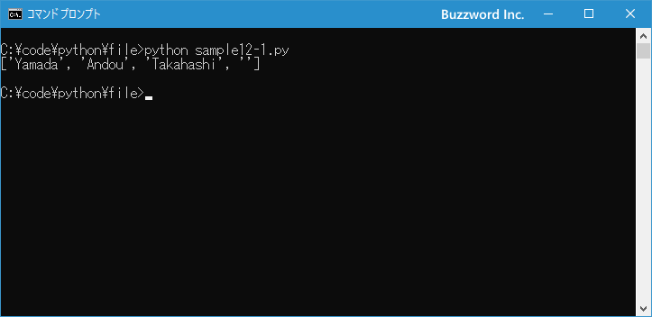

pathlibモジュールを使ったファイルの読み書き
Python 3.4 から pathlib モジュールが利用できるようになりました。パスに対する Path クラスのインスタンスを作成し、用意されたメソッドを使ってファイルの操作を行います。ここでは pathlib モジュールを使ったファイルの読み書きを行う方法について解説します。
Pathクラスのインスタンスを作成する
Path クラスのインスタンスを作成するには次のコンストラクタを使用します。
class pathlib.Path(*pathsegments)
引数にパスを指定して Path クラスのインスタンスを作成します。
例えば次のように記述します。
import pathlib path = './test/movie' p = pathlib.Path(path)
実際には Path クラスのインスタンスを作成すると、利用している環境( Windows か非 Windowsか)に応じて Path クラスのサブクラスである pathlib.WindowsPath クラスか pathlib.PosixPath クラスのインスタンスが作成されます。私の環境は Windows なので pathlib.WindowsPath クラスのインスタンスが作成されました。
import pathlib
path = './test/movie'
p = pathlib.Path(path)
type(p)
>> <class 'pathlib.WindowsPath'>
なお pathlib.WindowsPath クラス、および pathlib.PosixPath クラスのコンストラクタも用意されており、明示的にインスタンスを作成することもできます。
class pathlib.PosixPath(*pathsegments)
class pathlib.WindowsPath(*pathsegments)
ただし、 Windows 環境であれば pathlib.WindowsPath クラスのインスタンスは作成できますが、 pathlib.PosixPath クラスのインスタンスは作成できません( NotImplementedError が発生します)。
import pathlib
path = './test/movie'
wp = pathlib.WindowsPath(path)
pp = pathlib.PosixPath(path)
>> NotImplementedError: cannot instantiate 'PosixPath' on your system
ファイルオブジェクトを取得してファイルを開く
従来の方法では open 関数を使ってファイルオブジェクトを取得し、ファイルオブジェクトを使ってファイルの読み書きを行いました。 pathlib モジュールを使用する場合は Path クラスのインスタンスを作成したあとで、 open メソッドを使ってファイルオブジェクトを取得します。
Path.open(mode='r', buffering=-1, encoding=None, errors=None, newline=None)
1 番目の引数の mode にはファイルを開くモードを指定します。次の値が指定できます。 3 番目の引数の encoding には使用する文字エンコーディング名を指定します。テキストモードでのみ利用します。それぞれどのような値が指定できるのかは open 関数の場合とまったく同じです。「ファイルを開く」を参照されてください。
具体的には次のように記述します。
import pathlib
p = pathlib.Path('./test/name.txt')
f1 = p.open('r')
f2 = p.open('w+')
f3 = p.open('r', encoding='UTF-8')
f4 = p.open('rb')
Path クラスではファイルをオブジェクトを使用せずにファイルの読み書きを行えるメソッドが用意されていますが、一部できない機能があります。そのような場合にはファイルをオブジェクトを取得した上で処理を行ってください。
ファイルを閉じる
ファイルの利用が終わりましたら close メソッドを使ってファイルオブジェクトを閉じます。これは従来の方法と同じです。
import pathlib
p = pathlib.Path('./test/name.txt')
f = p.open('r')
...
...
f.close()
ほかの記述方法として with 文を使用するとファイルを開いたあと、利用が終わったら自動的にファイルを閉じることができます。
import pathlib
p = pathlib.Path('./test/name.txt')
with p.open('r') as f:
...
...
テキストファイルを読み込む
テキストファイルのすべてを一度に読み込む場合には Path クラスで用意されている read_text メソッドを使用することができます。
Path.read_text(encoding=None, errors=None)
パスが示すファイルの内容をテキストとして取得します。省略可能な 1 番目の引数には文字エンコーディングを指定します。
このメソッドを使用する場合は、ファイルオブジェクトを取得する必要がなく次のように記述することができます。
import pathlib
p = pathlib.Path('./test/name.txt')
print(p.read_text())
>> Yamada
>> Andou
>> Kuroki
なおテキストファイルを行単位で読み込む場合などは従来の方法と同じくファイルオブジェクトに対して readline メソッドなどを使用します。(詳しくは「テキストファイルを読み込む」を参照されてください)。
import pathlib
p = pathlib.Path('./test/name.txt')
f = p.open('r')
while True:
data = f.readline()
if data == '':
break
print (data.rstrip('\n'))
>> Yamada
>> Andou
>> Kuroki
テキストファイルを書き込む
テキストファイルへテキストを書き込む場合には Path クラスで用意されている write_text メソッドを使用することができます。
Path.write_text(data, encoding=None, errors=None)
1 番目の引数で指定したテキストを、パスが示すファイルへ書き込みます。省略可能な 2 番目の引数には文字エンコーディングを指定します。
このメソッドを使用する場合は、ファイルオブジェクトを取得する必要がなく次のように記述することができます。
import pathlib
p = pathlib.Path('./test/name.txt')
p.write_text('Suzuki\nHonda\n')
print(p.read_text())
>> Suzuki
>> Honda
なおファイルの書き込みは上書きで行われます。またファイルが存在しなかった場合は新しく作成した上でテキストの書き込みが行われます。既存の内容に追加で書き込みたい場合には、従来の方法と同じくファイルオブジェクトに対して write メソッドなどを使用します。(詳しくは「テキストファイルへ書き込む」を参照されてください)。
バイナリファイルの読み書き
バイナリファイルからバイトデータを読み込んだり、バイナリファイルへバイトデータを書き込んだりテキストを書き込む場合には Path クラスで用意されている read_bytes メソッドおよび write_bytes メソッドを使用することができます。
Path.read_bytes()
パスが示すファイルの内容を bytes オブジェクトで取得します。
Path.write_bytes(data)
パスが示すファイルへ引数で指定した bytes オブジェクトをお書き込みます。
次のように記述することができます。
import pathlib
p = pathlib.Path('./test/name.txt')
p.write_bytes(b'ABCDEFG')
data = p.read_bytes()
print(data)
>> b'ABCDEFG'
一度に読み込むデータのバイト数を指定したい場合には、従来の方法と同じくファイルオブジェクトに対して read メソッドなどを使用します。(詳しくは「バイナリファイルの読み込みと書き込み」を参照されてください)。
それでは簡単なサンプルプログラムを作って試してみます。テキストエディタで次のように記述したあと、 sample12-1.py という名前で保存します。
import pathlib
p = pathlib.Path('./test/name.txt')
data = p.read_text()
print(data.split('\n'))
プログラムと同じディレクトリの中に test という名前のディレクトリがあり、 test ディレクトリの中に name.txt ファイルが含まれています。

その後で、次のように実行してください。
python sample12-1.py

指定したファイルの内容を読み取り、改行文字を区切りとして行ごとに要素として追加したリストを作成しました。
-- --
pathlib モジュールを使ったファイルの読み書きを行う方法について解説しました。
( Written by Tatsuo Ikura )

著者 / TATSUO IKURA
初心者～中級者の方を対象としたプログラミング方法や開発環境の構築の解説を行うサイトの運営を行っています。